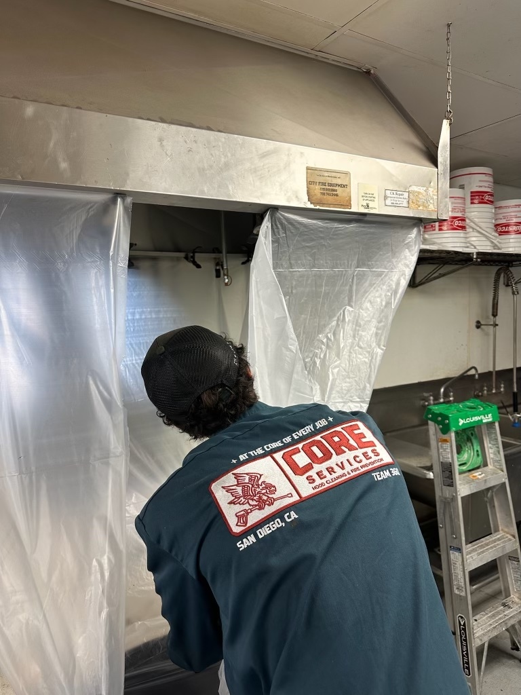

We're not just 'hood cleaners' - we're San Diego's trusted partners in keeping your kitchen safe, fire-code compliant, and running at full capacity. We started Core after growing up in the restaurant business and we've built our service around what we always wanted as operators. Rooted in family values, Core was built to bring relentless service, honesty, and professionalism to commercial kitchens throughout San Diego.
With over 100 restaurants served and 40+ five-star reviews, Core Services has become San Diego's trusted hood cleaning company for commercial kitchens that demand excellence. We're NFPA 96 certified, fully licensed and insured, and provide same-day emergency service when you need it most.
What Makes Us Different: We don't just clean hoods - we build relationships. Every service includes before/after photo documentation, digital portal access, automated service reminders, and a 100% satisfaction guarantee. We've helped hundreds of San Diego restaurants stay compliant, pass health inspections, and avoid costly fire hazards.

Commercial Hood Cleaning Throughout San Diego County
From downtown to Oceanside — restaurants of all sizes across San Diego County
Institutional kitchens that need reliable hood cleaning
San Diego's hospitality industry trusts Core for kitchen maintenance
Large-scale food production facilities in San Diego
Mobile food vendors operating throughout San Diego